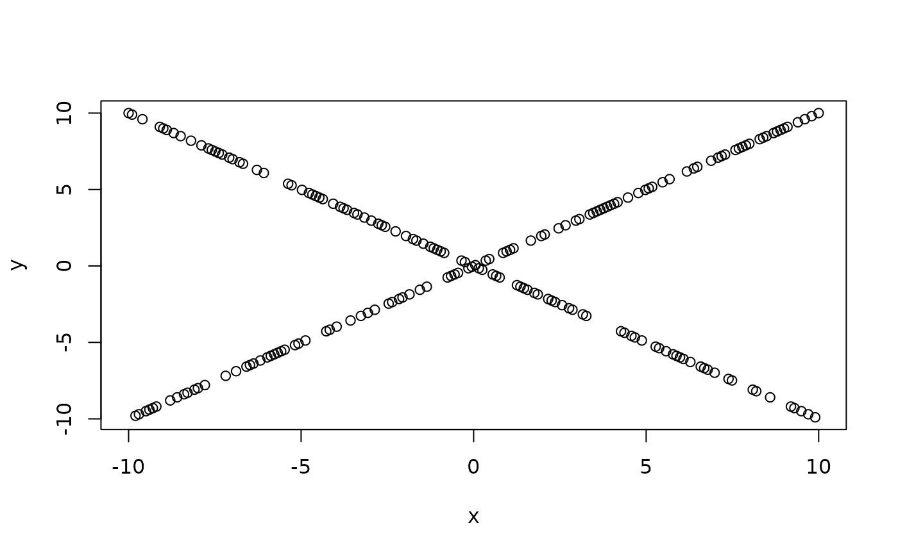

HoeffD.RdComputes a matrix of Hoeffding's (1948) D statistics for all possible
pairs of columns of a matrix. D
is a measure of the distance
between F(x,y) and G(x)H(y), where F(x,y) is the joint CDF of X and Y,
and G and H are marginal CDFs. Missing values are deleted in pairs rather than deleting all rows
of x having any missing variables.
The D statistic is robust against a wide
variety of alternatives to independence, such as non-monotonic relationships.
The larger the value of D, the more dependent are X and Y (for many types
of dependencies). D used here is 30 times Hoeffding's original D, and
ranges from -0.5 to 1.0 if there are no ties in the data.
print.HoeffD prints the information derived by HoeffD. The higher
the value of D, the more dependent are x and y.
HoeffD(x, y) # S3 method for HoeffD print(x, ...)
| x | a numeric matrix with at least 5 rows and at least 2 columns (if
|
|---|---|
| y | a numeric vector or matrix which will be concatenated to |
| ... | ignored |
a list with elements D, the
matrix of D statistics, n the
matrix of number of observations used in analyzing each pair of variables,
and P, the asymptotic P-values.
Pairs with fewer than 5 non-missing values have the D statistic set to NA.
The diagonals of n are the number of non-NAs for the single variable
corresponding to that row and column.
Uses midranks in case of ties, as described by Hollander and Wolfe.
P-values are approximated by linear interpolation on the table
in Hollander and Wolfe, which uses the asymptotically equivalent
Blum-Kiefer-Rosenblatt statistic. For P<.0001 or >0.5, P values are
computed using a well-fitting linear regression function in log P vs.
the test statistic.
Ranks (but not bivariate ranks) are computed using efficient
algorithms (see reference 3).
Frank Harrell <f.harrell@vanderbilt.edu>
Department of Biostatistics
Vanderbilt University
Hoeffding W. (1948) A non-parametric test of independence. Ann Math Stat 19:546--57.
Hollander M., Wolfe D.A. (1973) Nonparametric Statistical Methods, pp. 228--235, 423. New York: Wiley.
Press W.H., Flannery B.P., Teukolsky S.A., Vetterling, W.T. (1988) Numerical Recipes in C Cambridge: Cambridge University Press.
rcorr, varclus
x <- c(-2, -1, 0, 1, 2) y <- c(4, 1, 0, 1, 4) z <- c(1, 2, 3, 4, NA) q <- c(1, 2, 3, 4, 5) HoeffD(cbind(x, y, z, q))#> Error in .Fortran("hoeffd", x, n, p, hmatrix = double(p * p), aad = double(p * p), maxad = double(p * p), npair = integer(p * p), double(n), double(n), double(n), double(n), double(n), PACKAGE = "DescTools"): "hoeffd" not available for .Fortran() for package "DescTools"# Hoeffding's test can detect even one-to-many dependency set.seed(1) x <- seq(-10, 10, length=200) y <- x * sign(runif(200, -1, 1)) plot(x, y)HoeffD(x, y)#> Error in .Fortran("hoeffd", x, n, p, hmatrix = double(p * p), aad = double(p * p), maxad = double(p * p), npair = integer(p * p), double(n), double(n), double(n), double(n), double(n), PACKAGE = "DescTools"): "hoeffd" not available for .Fortran() for package "DescTools"